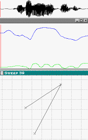

|
Acoustic waveform |
 |
|
|
|
|
Animation of two lips (left) |
About this image: this animation was created using data from Electromagnetic
Articulography (EMA). It shows data from the tongue dorsum (approximately 4 cm
back from the tip of the tongue) and the upper and lower lips, as well as the acoustic
waveform. The display was taken from the Emalyse progrm (as a series of screen shots),
and then cropped and sequenced to create the animation.